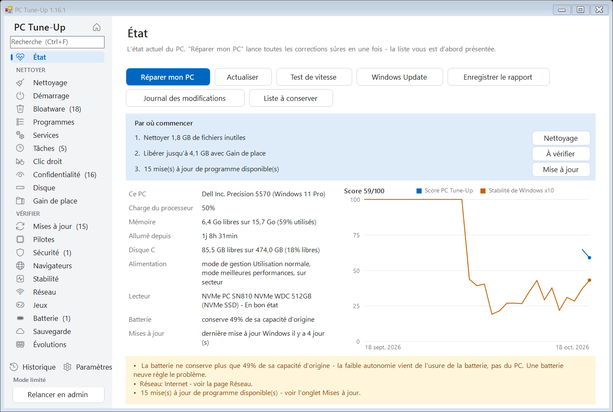
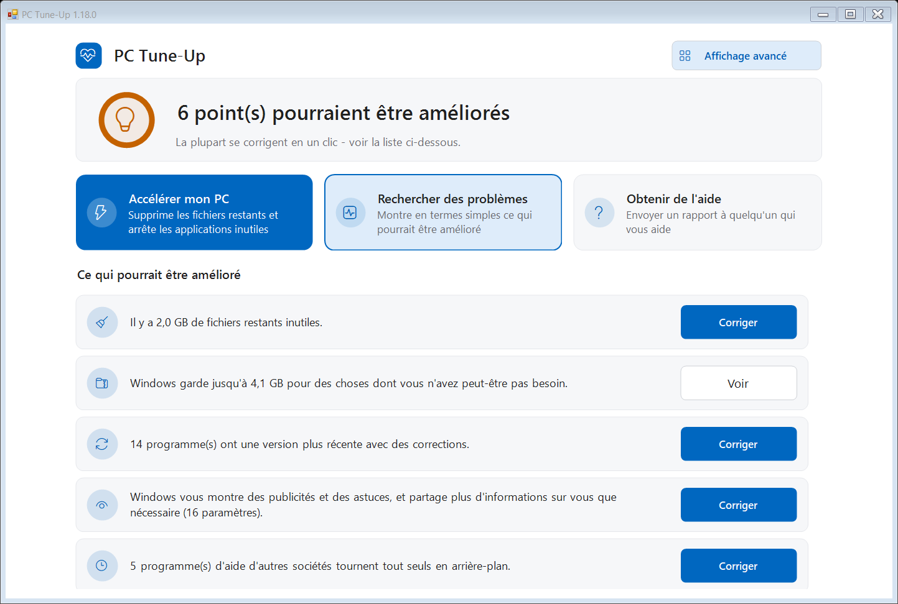
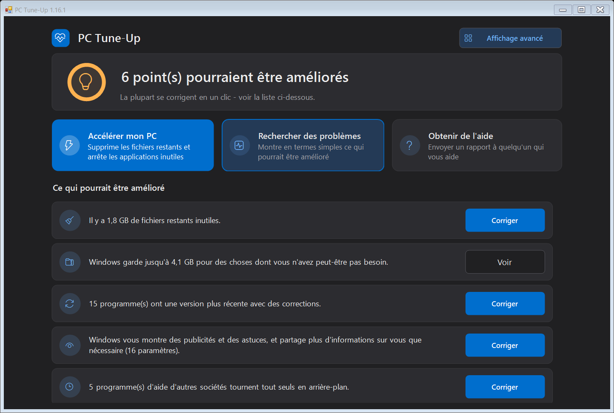
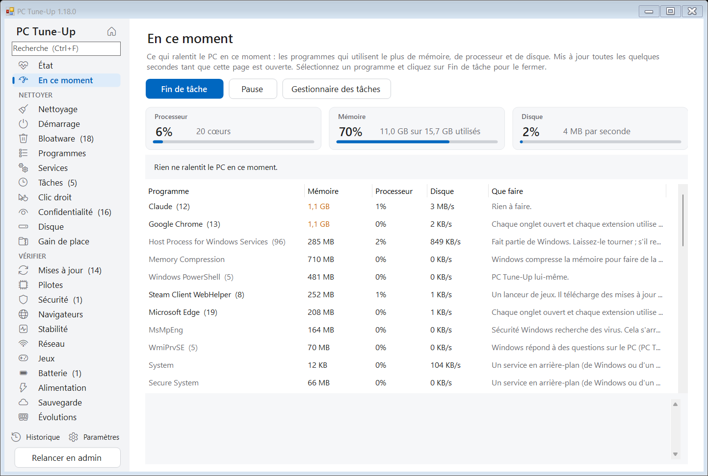
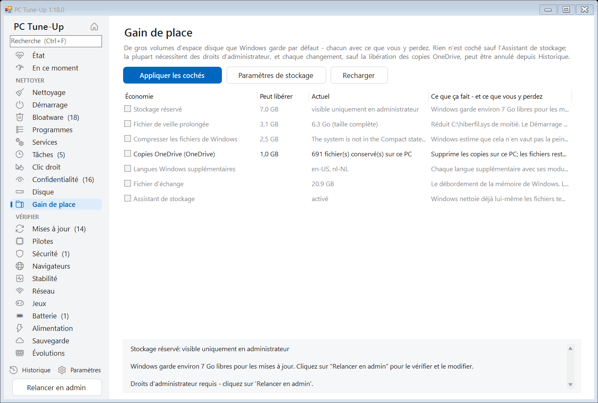
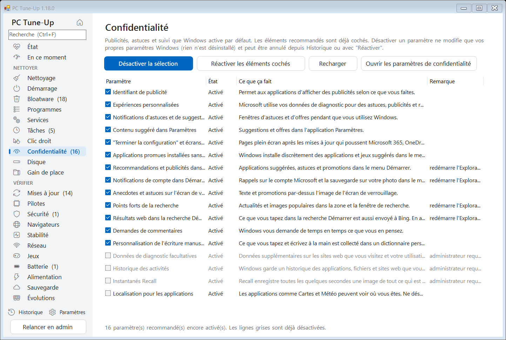
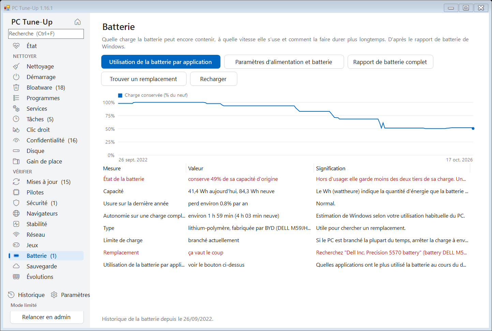
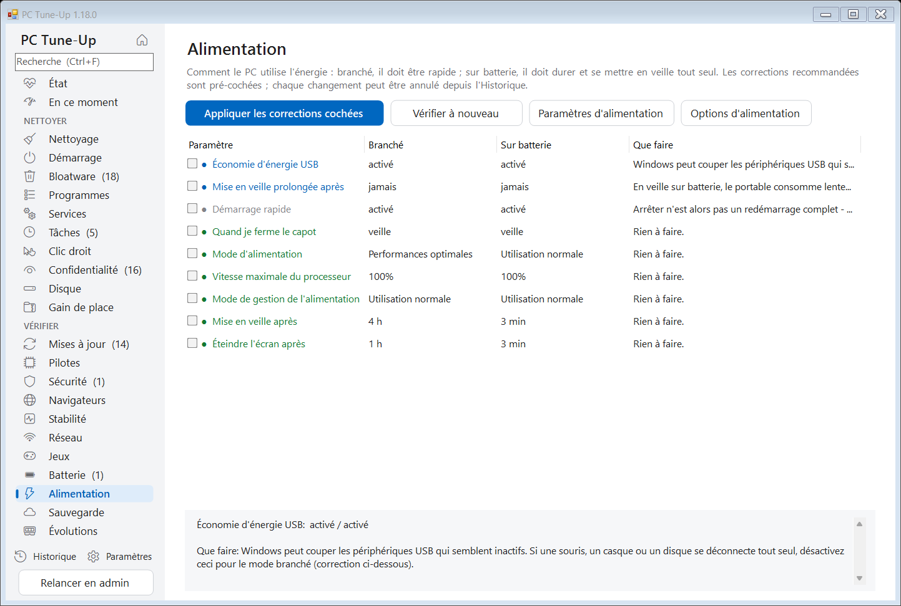
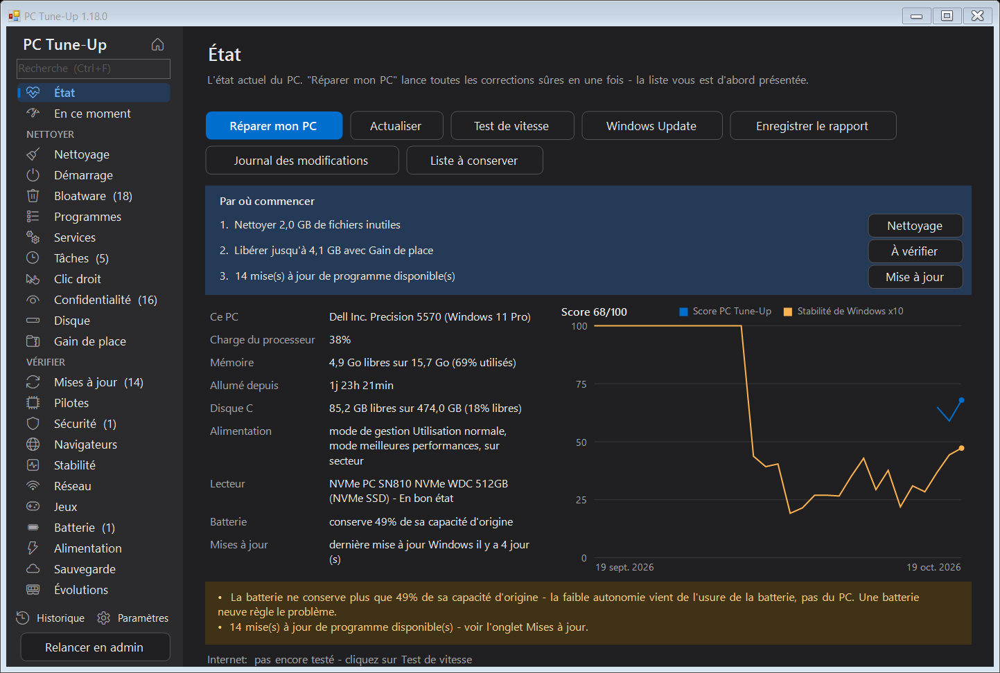

Contrôlez, nettoyez et accélérez n'importe quel PC Windows.
PC Tune-Up trouve ce qui ralentit votre PC, l'explique avec des mots simples et le corrige en un clic - et chaque modification peut être annulée.
Gratuit et open source (MIT). Windows 10 et 11. En français, anglais, néerlandais, allemand, espagnol, italien et polonais. Sans compte, sans publicité.

Tout au même endroit
Ce qu'un technicien regarderait, sur 25 pages, avec une recherche par Ctrl+F - et un encadré « Par où commencer » qui indique les trois choses les plus importantes du moment.
Fichiers inutiles et espace
Fichiers temporaires, vidages de plantage, caches des navigateurs et restes de Windows. Fichiers volumineux et en double. Gains de place comme le fichier de veille prolongée et les copies OneDrive.
D�marrage et bloatware
Applications qui d�marrent avec Windows, logiciels pr�install�s de tous les fabricants, programmes inutilis�s, services en arri�re-plan et t�ches planifi�es.
Confidentialité et menus
Publicités, astuces et suivi de Windows désactivés un par un. Entrées restantes du menu contextuel masquées.
En ce moment
Ce qui ralentit le PC à cet instant : processeur, mémoire et disque, les programmes qui les utilisent expliqués simplement, et Fin de tâche pour en fermer un - ainsi que le remplissage de la mémoire sur les 7 derniers jours.
Mises � jour et pilotes
Programmes obsol�tes mis � jour via winget, p�riph�riques avec un probl�me de pilote, et l'�ge des pilotes importants.
Sécurité et navigateurs
Support de Windows, antivirus, pare-feu, chiffrement, Secure Boot - et extensions de navigateur, paramètres imposés, fichier hosts et proxy détournés qui ressemblent à un logiciel publicitaire.
Plantages et stabilité
Plantages, blocages et écrans bleus des 30 derniers jours, regroupés selon leur vraie cause, avec des corrections en un clic.
Réseau et jeux
Signal Wi-Fi, latence, vitesse DNS et coupures. Quelle carte graphique votre jeu utilise vraiment, et ce qui le ralentit encore.
Batterie et alimentation
L'usure de la batterie et l'endroit où le fabricant cache la limite de charge à 80 %. Mode d'alimentation, veille, écran et capot : rapide une fois branché, endurant sur batterie.
Sauvegarde et évolutions
Si vos fichiers survivraient à un PC en panne ou volé. Quelles évolutions de mémoire, de disque et de batterie conviennent exactement à ce PC, et si elles en valent la peine.
Prudent par conception
Un outil d'entretien ne doit jamais aggraver les choses.
- ✓Chaque modification figure sur la page Historique, et presque toutes peuvent être annulées en un clic.
- ✓Il demande d'abord et montre exactement ce qu'il va faire. Rien d'important n'est coché d'avance.
- ✓Un affichage simple pour ceux qui ne veulent pas les détails : un seul écran calme, l'état en mots simples, trois grands boutons et uniquement des corrections sûres - et un bouton pour envoyer un rapport au proche qui vous aide d'habitude. Un clic sur Affichage avancé montre tous les outils.
- ✓Les logiciels de sécurité, VPN, pilotes et bases de données ne sont jamais touchés, et vous pouvez ajouter vos propres programmes à une liste à conserver.
- ✓En administrateur, il crée un point de restauration Windows avant les modifications importantes.
- ✓L'entretien hebdomadaire facultatif nettoie tout seul et ne vous prévient que lorsque quelque chose de nouveau apparaît.
- ✓Quand Réparer mon PC a terminé, il montre ce qui a changé - espace libre, applications lancées avec Windows, le score - avant et après.
- ✓Des rappels pour ce qui attend depuis trop longtemps - un redémarrage attendu par Windows, des mises à jour en souffrance, un nettoyage ancien - chacun avec un bouton Plus tard.
- ✓Chaque version est testée automatiquement sur un PC Windows neuf, dans les quatre langues.
Captures d'écran
Clair et sombre, selon votre réglage Windows.








Installer
- Téléchargez PC-TuneUp.exe et lancez-le. Il propose de s'installer tout seul - sans droits d'administrateur - et se tient à jour.
- La première fois, Windows peut afficher « Windows a protégé votre ordinateur », car le programme n'est pas encore signé numériquement. Cliquez sur Informations complémentaires > Exécuter quand même.
- Il s'ouvre en affichage simple : cliquez sur Accélérer mon PC, ou corrigez les points de la liste un par un. Pour tous les outils, cliquez sur Affichage avancé et commencez par Réparer mon PC sur la page État. Utilisez Relancer en admin pour inclure aussi les fichiers et réglages propres à Windows.
Bientôt aussi via winget : winget install MichaelKloprogge.PCTuneUp
Pour l'informatique et les scripts
PC-TuneUp.exe /report[:fichier.html] tout contrôler et enregistrer un rapport PC-TuneUp.exe /fix exécuter les étapes sûres de Réparer mon PC sans demander PC-TuneUp.exe /auto l'entretien automatique (nettoyer, contrôler, prévenir) PC-TuneUp.exe /install | /uninstall installer ou supprimer pour l'utilisateur actuel
Confidentialité
Tout fonctionne sur votre PC. PC Tune-Up n'a pas de compte, pas de suivi et pas de statistiques, et rien sur votre PC n'est envoyé nulle part. Internet ne sert qu'à la recherche de mises à jour (GitHub), au test de vitesse facultatif (Cloudflare) et à la liste de programmes de winget.
Le code source complet est sur GitHub, chacun peut donc vérifier ce qu'il fait.